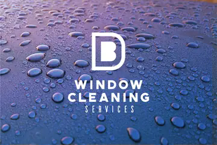

Customer Booking Terms
Last updated: 2 August 2026
These terms apply when you request or book window cleaning from B D Window Cleaning Services. Please read them before booking.

B D Window Cleaning Services Home pageLast updated: 2 August 2026
These terms apply when you request or book window cleaning from B D Window Cleaning Services. Please read them before booking.
B D Window Cleaning Services is a local window-cleaning business run by Ben Drummond.
You can contact us by:
In these terms, “we”, “us” and “our” mean B D Window Cleaning Services. “You” and “your” mean the customer.
Submitting the website form sends us a booking request. Your appointment is not confirmed until we contact you to accept the booking.
The date and time selected on the website are subject to availability. Appointment times are arrival windows rather than guaranteed exact arrival times.
You must provide accurate property, contact and access information. Please tell us about anything that may affect the clean, including locked gates, restricted access, pets, parking problems, damaged windows or awkward areas.
Prices produced by the website are estimates based on the information you provide.
At your first appointment, we will check the property and confirm the final price before cleaning begins. The price may change if:
You can accept or decline the final price. If you decline before cleaning begins, there will be no cleaning charge.
Any additional work will be discussed and agreed with you before it is carried out.
A standard clean includes the outside glass, frames and sills of the windows included in your agreed quote, where they can be reached safely using our normal equipment.
Regular external doors are included unless we tell you otherwise. French doors or patio doors, conservatories and other additional areas must be included in your quote or agreed separately.
Unless specifically agreed, the service does not include:
We may refuse to clean any area that we reasonably consider unsafe.
Regular cleans are normally carried out approximately every six to seven weeks, which works out at around eight cleans each year.
Dates may vary because of weather, access, holidays, scheduling or other circumstances. We will give you reasonable notice of your next clean wherever possible.
Regular cleaning is paid by monthly payments. Every three monthly payments cover two regular cleans.
By choosing regular cleaning, you agree to make a minimum of three monthly payments, covering your first two regular cleans. The first payment will not be requested until your first clean has been completed.
After the first three monthly payments, the service continues until you or we cancel it. You may then cancel at any time without a cancellation fee, although payment remains due for cleaning already provided.
Monthly payments are instalments towards your cleans and are not a separate charge for each calendar month. If the service ends, we will review the payments received and cleans completed and explain any remaining balance or credit.
If you choose a one-off clean, there is no continuing cleaning commitment.
The agreed one-off price becomes payable after the clean has been completed. A one-off clean will usually cost more than a regular clean because it does not form part of an ongoing cleaning round.
Nothing is payable before your first clean.
One-off cleaning payments are due after completion. Regular cleaning payments are due on the monthly dates agreed with you.
We will explain the available payment methods when confirming your service.
If a payment fails or becomes overdue, we will contact you and give you a reasonable opportunity to pay. We may pause future cleans while an overdue amount remains unpaid.
You do not usually need to be at home while we clean, provided we can safely access all agreed areas.
Before the appointment, please:
If we cannot access part of the property, we may clean the accessible areas and charge a reasonable amount for the work completed. We may instead contact you to rearrange the clean.
We will not charge for work that has not been carried out unless a separate missed-appointment charge was clearly agreed with you beforehand.
Repeated access problems may result in us ending the regular cleaning arrangement.
Please give us at least 24 hours’ notice if you need to move or cancel an appointment.
You can contact us by telephone, WhatsApp or email. We understand that emergencies happen and will try to be reasonable.
If you cancel your regular cleaning service, this does not remove your responsibility to pay for cleans already completed or the minimum three payments agreed at the start, except where your statutory cancellation rights apply.
Where a service contract is agreed online, by telephone, by email or at your home, you may have a legal right to cancel it within 14 days, beginning the day after the contract is made.
You can cancel by sending a clear statement to:
Email: bdwindowservices@gmail.com
Telephone or WhatsApp: 07598 629684
If you ask us to carry out a clean during the 14-day cancellation period, you are requesting that the service begins before the cancellation period ends.
If you then cancel after cleaning has begun, you may be required to pay a reasonable amount for the service already provided.
For a one-off clean completed in full during the cancellation period, your cancellation right may end once the clean has been fully completed, provided you expressly requested an early start and acknowledged this before work began.
Nothing in these terms limits your statutory consumer rights.
We may work in light rain because this does not normally affect cleaning with purified water.
We may postpone or stop a clean during heavy rain, strong winds, freezing conditions, extreme heat or any other conditions we consider unsafe or unsuitable.
If we need to rearrange because of weather or another circumstance outside our reasonable control, we will contact you and offer another date. You will not be charged for work that has not been completed.
Please tell us about damaged glass, frames, seals, vents, roofs or other fragile areas before cleaning begins.
We are not responsible for water entering through windows or doors that have been left open or through defective frames, seals or vents.
We are not responsible for damage caused by an existing defect, normal wear and tear or inaccurate information supplied by the customer. This does not exclude responsibility for damage directly caused by our failure to use reasonable care and skill.
We will provide the service with reasonable care and skill.
If you believe we have missed an area or the clean has not been completed properly, please contact us as soon as reasonably possible. Where appropriate, we will inspect the problem and return to correct the work within a reasonable time.
Nothing in these terms excludes or limits liability where doing so would be unlawful, including liability for:
After the initial three-payment minimum, either you or we may end the regular cleaning arrangement by giving reasonable notice.
We may end or suspend the service immediately where:
Any payment for cleaning already completed will remain due.
We may occasionally need to change regular cleaning prices because of increased costs or changes to the property or service.
We will give you reasonable notice before a price change takes effect. No price increase will apply retrospectively. After the initial three-payment minimum, you may cancel before the new price begins if you do not wish to accept it.
If you are unhappy with any part of the service, please contact us promptly:
We will consider the complaint fairly and try to resolve it within a reasonable time.
We use personal information to manage quotes, appointments, cleaning services and payments. Further information is available in our Privacy Notice.
We may update these terms when our services or legal responsibilities change.
Any changes affecting an existing regular customer will be explained before they take effect. A change will not apply retrospectively to a clean that has already been agreed.
These terms are governed by the laws of England and Wales. You can bring legal proceedings in the courts that apply to your place of residence.